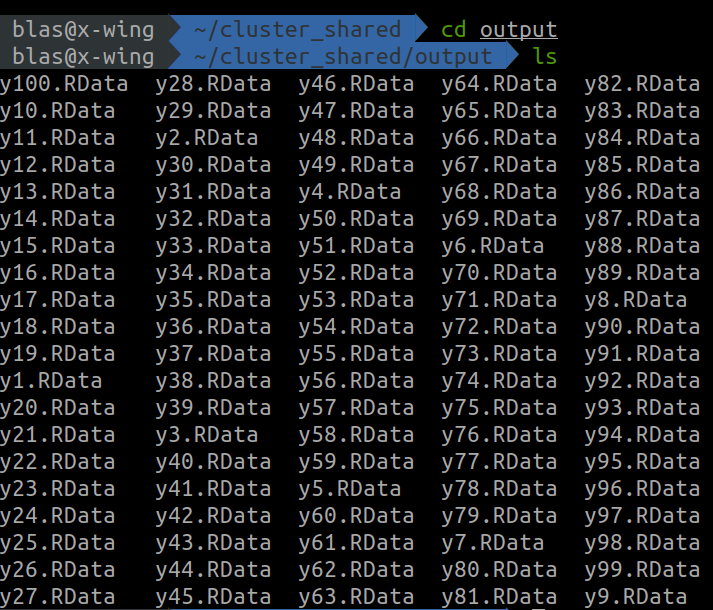

The task
In this hypothetical example we have a large number of data frames stored in /home/user/cluster_shared/input. Each data frame has the same predictors a, b, c, and d, and a different response variable, named y1 for the data frame y1, y2 for the data frame y2, and so on. In the example we will be using 100 data frames, but there could be thousands. This example would be valid as well for any other kind of object, such as raster files, time-series, etc etc.
First we have to load the libraries we’ll be using.
#automatic install of packages if they are not installed already
list.of.packages <- c(
"foreach",
"doParallel",
"ranger"
)
new.packages <- list.of.packages[!(list.of.packages %in% installed.packages()[,"Package"])]
if(length(new.packages) > 0){
install.packages(new.packages, dep=TRUE)
}
#loading packages
for(package.i in list.of.packages){
suppressPackageStartupMessages(
library(
package.i,
character.only = TRUE
)
)
}
The code chunk below generates the folder /home/user/cluster_shared/input and populates it with the dummy files.
#creating the input folder
input.folder <- "/home/blas/cluster_shared/input"
dir.create(input.folder)
#data frame names
df.names <- paste0("y", 1:100)
#filling it with files
for(i in df.names){
#creating the df
df.i <- data.frame(
y = rnorm(1000),
a = rnorm(1000),
b = rnorm(1000),
c = rnorm(1000),
d = rnorm(1000)
)
#changing name of the response variable
colnames(df.i)[1] <- i
#assign to a variable with name i
assign(i, df.i)
#saving the object
save(
list = i,
file = paste0(input.folder, "/", i, ".RData")
)
#removing the generated data frame form the environment
rm(list = i, df.i, i)
}
Our target now will be to fit one ranger::ranger() model per data frame stored in /home/blas/cluster_shared/input, save the model result to a folder with the path /home/blas/cluster_shared/input, and write a small summary of the model to the output of foreach.
Such target is based on this rationale: When executing a foreach loop as in x <- foreach(...) %dopar% {...}, the variable x is going to grow in memory very fast, competing for RAM resources with the worker nodes. Furthermore, since x is being written on the fly, the results would be lost if the computer crashes. When the size of the input and the output of our parallelized operation is larger than memory, we can use an NFS folder to store inputs and outputs, while keeping the RAM memory free for computational tasks only, with the positive side effect of having our outputs already stored should our computer decide to crash.
Also, please notice that here I am focusing in a cluster setting, but using a folder to read and write data during a loop paralellized with foreach can indeed be done in a single computer without an NFS folder. Any folder in your system will do the trick as well!
So, from here, we are going to prepare the cluster, and execute a parallelized loop fitting one model per data frame that reads the inputs and writes the outputs to the shared folder.
Cluster setup
We will also need the function I showed in the previous post to generate the cluster specification from a GitHub Gist.
source("https://gist.githubusercontent.com/BlasBenito/93ee54d3a98d101754aaff0d658dccca/raw/de57b23740ca90bc02fbd0d5cd3551106ff2fb6d/cluster_spec.R")
Below I use the function to create a cluster specification and initiate the cluster with parallel::makeCluster().
#generate cluster specification
spec <- cluster_spec(
ips = c('10.42.0.1', '10.42.0.34', '10.42.0.104'),
cores = c(7, 4, 4),
user = "blas"
)
#define parallel port
Sys.setenv(R_PARALLEL_PORT = 11000)
Sys.getenv("R_PARALLEL_PORT")
#setting up cluster
my.cluster <- parallel::makeCluster(
master = '10.42.0.1',
spec = spec,
port = Sys.getenv("R_PARALLEL_PORT"),
outfile = "",
homogeneous = TRUE
)
#check cluster definition (optional)
print(my.cluster)
#register cluster
doParallel::registerDoParallel(cl = my.cluster)
#check number of workers
foreach::getDoParWorkers()
Parallelized loop
For everything to work as intended, we first need to create the output folder.
output.folder <- "/home/blas/cluster_shared/output"
dir.create(output.folder)
And now we are ready to execute the parallelized loop. Notice that I am using the output of list.files() to have a vector of file names the loop will iterate over. The steps inside of the loop go as follows:
- 1. Remove the extension
.RData from the file name. We’ll later use the result to use assign() on the fitted model to change its name to the same as the input file before saving it.
- 2. Read the input data frame and store in an object named
df.
- 3. Fit the model with ranger, using the first column of
df as respose variable.
- 4. Change the model name to the name of the input file without extension, resulting from the first step described above.
- 5. Save the model into the output folder with the extension
.RData.
- 6. Return a data frame with one line with the name of the response variable, the r-squared, and the importance of each predictor.
#list of input files as iterator
input.files <- list.files(
path = input.folder,
full.names = FALSE
)
modelling.summary <- foreach(
input.file = input.files,
.combine = 'rbind',
.packages = "ranger"
) %dopar% {
# 1. input file name without extension
input.file.name <- tools::file_path_sans_ext(input.file)
# 2. read input file
df <- get(load(paste0(input.folder, "/", input.file)))
# 3. fit model
m.i <- ranger::ranger(
data = df,
dependent.variable.name = colnames(df)[1],
importance = "permutation"
)
# 4. change name of the model to one of the response variable
assign(input.file.name, m.i)
# 5. save model
save(
list = input.file.name,
file = paste0(output.folder, "/", input.file)
)
# 6. returning summary
return(
data.frame(
response.variable = input.file.name,
r.squared = m.i$r.squared,
importance.a = m.i$variable.importance["a"],
importance.b = m.i$variable.importance["b"],
importance.c = m.i$variable.importance["c"],
importance.d = m.i$variable.importance["d"]
)
)
}
Once this parallelized loop is executed, the folder /home/blas/cluster_shared/output should be filled with the results from the cluster workers

Now that the work is done, we can stop the cluster.
parallel::stopCluster(cl = my.cluster)
Now you know how to work with data larger than memory in a parallelized loop!